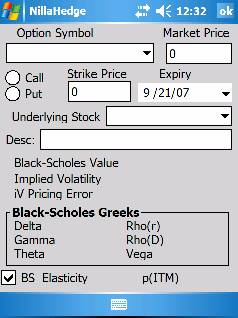
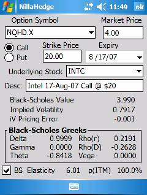

The Option Definition Dialog is one of two ways to create an option definition in NillaHedge. The other is to use the Option Chain Retriever to save one of the options displayed in its options list, but we’ll get to that later. To define an option from scratch, you’ll need the option’s symbol, as well as its market price, strike price, expiration date, underlying stock symbol, and of course whether it’s a put or a call.Refer to the Symbol / Identifier discussion in the Instrument Definitions section.
Automated price updates depend on internet sources which catalogue pricing information using exchange registered symbols. No confirmation option allows you to interfere with option price updates, so it’s imperative that you stick with the exchange registered option symbols.
Market price and strike price are currency denominated values.

ExpiryThe Expiry date picker captures the option’s expiration date. The vast majority of stock options expire on the third Friday of the month (technically the third Saturday, but the exchanges are closed on Saturdays), so the convention is to say they expire on the third Friday. Be careful to specify the correct date. One could argue that the day of the month in the expiry date is superfluous because options always (effectively) expire on the third Friday so you’d be right insofar as exchange registered issues go. However, since the Option Chain Retriever will automatically save exchange traded options directly into the database, including the exact expiration date, we decided to leave exact date flexibility in the Option Definition Dialog. Unfortunately, with that flexibility you also get the burden of accurately specifying the expiry date each time you define an option manually. Sorry about that.
The Put / Call radio button pair is technically a tri-state. It is initialized to an undefined state, which prevents analysis, forcing you to choose a valid value. You might ask, why not just pre-select Call as the default value and save the user from a pen-click, half of the time? Well, it’s because an invalid default value forces the user to proactively select a valid value, thus minimizing the potential of defining an option with an incorrect Put/Call value as an oversight.
The Underlying Stock is a combo-box control, so you can either type the stock symbol or pick it from a list of stock symbols already defined in the database. If the specified stock doesn’t already exist in the database or it has zero volatility or zero market value, analysis will be disabled, resulting in a display like the one on the previous page.
However, if there is an underlying stock defined in the database with positive market value and positive volatility, the option can be analyzed, producing analytical results like those at right.
All of the analytical information presented below the description field also appears in the Option Analyzer. Please refer to the Glossary and the section on the Option Analyzer to learn more about implied volatility, Black-Scholes value and greeks, elasticity, and the probability of being in the money, p(ITM).